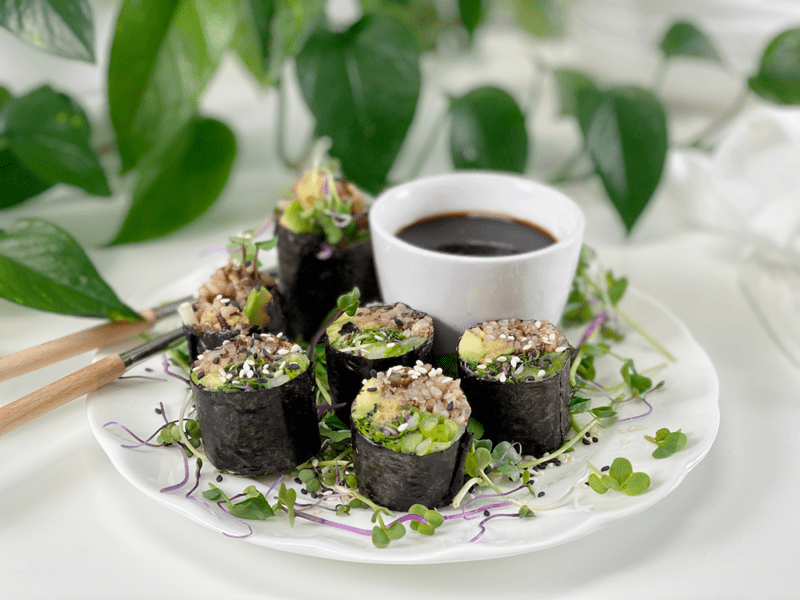
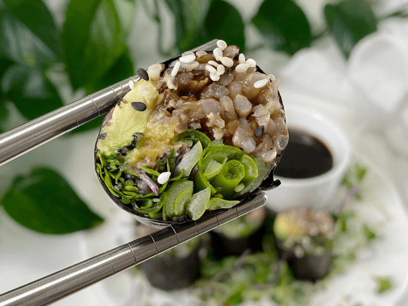

Vegan Sushi Roll | Cooked | Untraditional BUT Delicious
Are you feeling the need to up your culinary exploration? If so, today’s recipe might help inspire you to think outside the “sushi roll” by using everyday ingredients lurking in your kitchen. Roughly one week ago, Bob asked if I could make some vegan sushi for him. Usually, he enjoys going out for sushi for the artistic experience, but with the COVID-19 quarantine taking place right now…ALL of our culinary masterpieces are created at home, by me.

I wasn’t deliberately ignoring his request; I was literally waiting for the right inspiration to come along. I guess I wouldn’t do so well as a chef in a restaurant because I struggle to make food on demand. I need to feel inspired, because that’s when my creativity flows. I suppose that goes for all things in my life. I have been a lifelong artist, dabbling in just about every medium out there, but none of it happened without passion for what I do.
Finally, the sushi bug bit me, and this dish came together within ten minutes. I will be honest (not that I would never be dishonest), I was hesitant to put this plate down in front of Bob, who is a bona fide sushi snob (I say that with all the love in the world). His first reaction: “Wow, that’s beautiful.” I had to walk away; I was afraid a lip might curl after popping a slice in his mouth. “Mmmmm” is what I heard from around the corner as I stood, flattened against the wall, holding my breath.
I stood tall, filled my chest with confidence (air), and found my feet taking me to Bob’s side. He said it was delicious! After finishing the roll, he asked for another. He loved the texture and flavor pop that the hummus added…which was the one ingredient I thought for sure he would criticize as out of place in a sushi roll. Maybe it doesn’t “belong,” but I always let the taste buds dictate where my culinary excursions lead me.
Key Ingredient Run-Down
Nori Sheets
- Nori is thin, paper-like sheets of kelp seaweed sold in packages. It is pressed, roasted, and ready to eat. For best results, look for larger sheets that measure 8”x 7”.
- It is produced by washing and chopping fresh seaweed to create a slurry. That mixture then is spread thin, dried, cut into sheets, and lightly toasted. The result is a crunchy, dark paper with just a hint of ocean flavor.
- Nori sheets last a long time, but if you notice that they are fading in color, it’s time to replace your stock with a fresh package.
Wild Rice
- Wild rice is not typically used when making sushi rolls, but I like to think outside the “roll.” Besides, I had just made a batch, and when chilled, it stuck together beautifully, so I knew that it was going to work great in the sushi roll.
- You can use any rice as long as it is somewhat sticky, which will help hold the ingredients together. The bonus to using cooled cooked rice is that it ramps up the resistant starches found within it. Click (here) to read more about the health benefits.
Hummus | Oil-Free | Tahini-Free
- Adding hummus is NOT a traditional ingredient by any means, but I have come to find that vegan sushi rolls can be made with all sorts of unique components. It’s a great way to explore how to use up leftovers in the fridge.
- I used my hummus recipe, which can be found (here). It’s full of flavor that brought “life” to this sushi roll.
Coconut Aminos
- Coconut aminos is a soy sauce replacement. There are many different types of soy sauce on the market, so feel free to use whichever one fits into your diet. I prefer coconut aminos which are gluten- and soy-free.
- The brown liquid has a deep, savory flavor that’s a lot like soy sauce, but with a touch of sweetness and less salt. (A teaspoon of coconut aminos contains about 90mg sodium, while a teaspoon of soy sauce contains about 307mg sodium.)
- It has no discernible coconut taste, as it enhances and deepens the flavors of the other ingredients in a dish.

Tips and Tricks
- Be careful not to overstuff your sushi roll, as that can cause problems when it comes to closing and sealing. It can also make it hard to eat.
- If you wish to use a thick dip as part of the sushi roll filling (like I did with hummus), I discovered that it is much easier to put it in a piping bag, snip the tip, and pipe it out on the ingredients, going side to side. If you try to spread it with a knife or spoon, it will drag your other ingredients all over and make a mess.
- Create a Mise en Place (have all the ingredients ready on your workspace).
 Ingredients
Ingredients
- Wild rice blend
- Hummus| Oil-Free | Tahini-Free
- Avocado, sliced
- Green onions, sliced lengthwise
- Sprouts or microgreens
- Coconut aminos
- Bowl of water
- Nori sheets
Preparation
Prepare the Mat and Nori Sheet
- Prepare the bamboo rolling mat by covering it with plastic wrap.
- The plastic will prevent the rice from sticking to the bamboo. Don’t completely seal the mat. Leave some space open at the side for air to escape, to prevent bubbles from forming, which will otherwise make it very hard to create an even roll.
- This step is optional, but it keeps the mat clean throughout the sushi rolling process. Trust me; things can get messy fast.
- Place it directly in front of you so you can roll the sushi roll away from your body once it is filled.
- Set the Nori sheet on the Bambu mat.
- Make sure the shiny side of the Nori is placed down (rough side is facing up), and the lines in the sheet are running parallel.
Add the Fillings
- Gently spread the cooked rice on the sheet. Use your fingers to spread the rice evenly.
- To prevent the rice from sticking to your hands, dip your hands in cold water and clap your hands to get rid of most of the moisture. This creates a thin film of liquid on your hands that prevents rice from sticking to your hands.
- Spread the rice to three sides of the nori sheet, leaving a 1/2″ border visible on the side furthest from you. Once all the filling is in place, and we start rolling it, we will be wetting that 1/2″ border with water, which will create a seal.
- Layer the sliced green onions and avocado on top of the rice.
- Place the hummus in a piping bag and pipe out a long thick rope of it on the inner side of the rice.
- If you pipe it on top or on the side closest to you, your fingers will end up in it, and it will make a mess.
- Pile on the microgreens, more than you think. Everything is going to get rolled up tightly.
Rolling the Maki Roll
- Double-check that you have lined up the edge of the nori sheet that has rice on it with the side of the mat closest to your body.
- Lift the end of the bamboo mat closest to you and fold it over your sushi ingredient.
- Work from the middle of the mat (rather than the corners) to roll the nori sheet over the contents until the edge is in line with the space on the other side.
- Using the bamboo mat, tuck the end of the nori into the rice and ingredients. Make sure that you have a tight roll. If it isn’t tight, the roll will fall apart when trying to eat it.
- Lift away the mat from your roll, and dab that 1/2″ exposed edge of the nori sheet with water.
- Using your bamboo mat, roll your sushi into the exposed edge of nori to close. The water softens the nori sheet, making it sticky, which will create a seal for the roll.
Slicing and Plating
- Using a wet, sharp knife, begin cutting into the center of your roll to make two halves.
- If your knife is dull, you will have to saw through the roll, which will cause it to fall apart.
- Make sure to wipe off your knife in between each cut. You should have six pieces.
- Cut the halves into thirds, wiping off the knife between each cut. Place each piece on a plate and serve with coconut aminos (soy sauce substitute).
© AmieSue.com